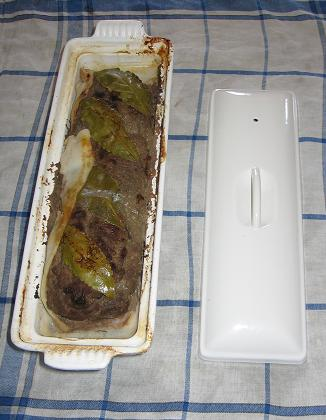

Recette n°130 : pâté de
viande et foie de porc de Picardie

Attention : il faut ne pas être allergique à la vue
du sang, du foie, et des chairs broyées ; il faut en outre
disposer d'un grand moule à terrine (moule métallique
à couvercle par exemple) et d'un récipient pouvant
l'accueillir comme un bain-marie, le tout entrant dans le four
Ingrédients : (pour 12 personnes)
- 1 kg de chair à saucisse
- 500 g de foie de porc (on peut remplacer par des foies de volaille si
on en trouve)
- 10 échalotes hachées
- 4 gousses d'ail d'Arleux broyées
- 2 oeufs entiers
- 1 petit verre de Porto (ou de Cognac, etc.)
- 1 barde de lard
- une bonne pincée de gros sel
- une bonne pincée de poivre
- une grosse pincée d'herbes de Provence (ou de thym libanais)
- 8 feuilles de laurier
Préparation :
- mettre le four à préchauffer à 200C
- dénerver le foie de porc s'il ne l'est pas
- broyer le foie au moulin à viande ou au mixer (âmes
sensibles, s'abstenir)
-
mélanger le foie broyé à la chair à
saucisse, aux oeufs, au Porto, aux échalottes, à l'ail,
au sel, au poivre, aux herbes
- repasser le tout au moulin à viande ou au mixer (c'est
à peine moins dégoûtant que le
précédent broyage)
- mettre la barde de lard en fond et sur les parois du moule à
terrine
- déposer quatre feuilles de laurier en fond
- remplir la terrine avec l'appareil ( c'est-à-dire la
préparation))
- déposer dessus les 4 autres feuilles de laurier
- rabattre la barde si elle dépasse
- couvrir du couvercle (à défaut de couvercle, on
conseille de luter le récipient à la pâte morte,
mais je ne l'ai jamais fait)
- mettre le moule à terrine maintenant plein et clos dans le
récipient qui lui servira de bain-marie
- enfourner le tout à four chaud
- cuire entre 1h et 1h15
- défourner
et laisser refroidir jusqu'à atteinte de la température
ambiante
- mettre au frigo au moins une journée avant de déguster
Observations :
- recette préparée à Quiberon le 8 juillet 2007
(noous étions 13). Absolument dégoûtante à
préparer (broyage du foie) mais excellente.